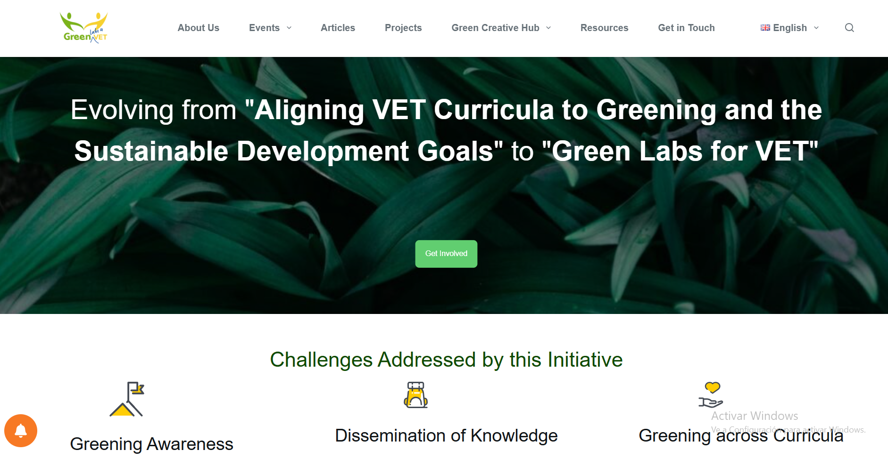
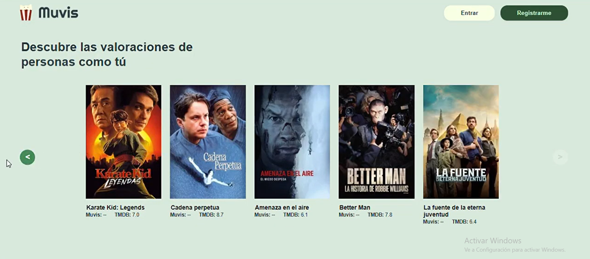
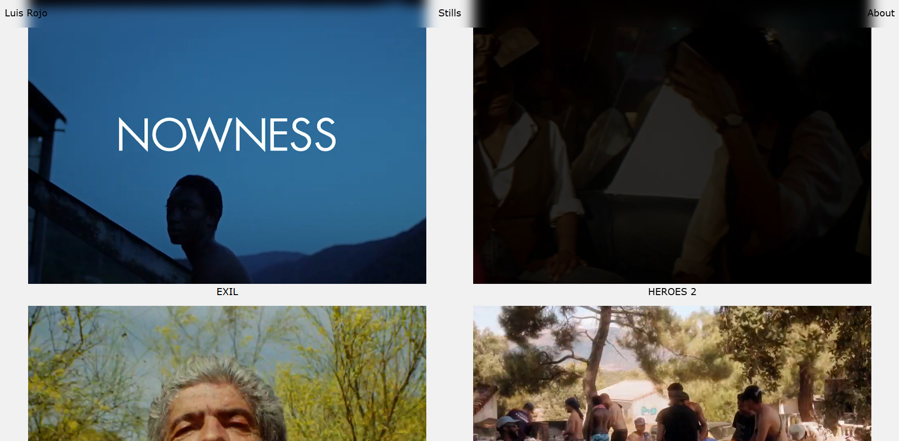

¿Quién soy yo?
Me dedico especialmente al desarrollo frontend y mis principales
objetivos al programar son crear un código limpio y eficiente y que
la experiencia del usuario sea placentera. Me gradué en 2025 en el
grado de desarrollo de aplicaciones web en el IES Villaverde y ahora
estoy trabajando en proyectos personales.
Lenguajes, tecnologías y aptitudes
- HTML5
- CSS3
- JavaScript (ES6+)
- PHP
- Java (JDK18)
- TypeScript
- React
- Laravel
- Astro
- Figma
- Git y GitHub
- MySQL
- Eclipse
- Wordpress
- Elementor
- Node.js
- Docker
- Inglés C1
- Francés B2
Proyectos recientes
Durante tres meses trabajé en la universidad MCAST de Malta en uno de sus proyectos Erasmus, en el que
acreamos un nuevo
diseño de la web utilizando Figma. Posteriormente lo implementamos utilizando
Worpress y Elementor e hicimos el seguimiento SEO de la página usando Google Analytics y otros plugins de
Wordpress.
Con todo esto conseguimos mejorar la experiencia de usuario y la accesibilidad de la página, así como su
posicionamiento en Google.
Ver página del proyecto en la
actualidad

Para mi proyecto final de grado desarrollé junto con mis compañeros una red social para amantes del cine y las
series
utilizando React en el frontend y Laravel en el backend. Utilizamos la API TMDB para obterner toda la información sobre las películas
y creamos un sistema de usuarios en el que podían interactuar entre ellos,
añadir películas y series a su lista de favoritos y valorar el contenido. La desplegamos en AWS pero ahora
mismo la página no está desplegada en ningún servidor, aunque
podéis ver el código en
GitHub.

Actualmente estoy trabajando en proyectos personales, entre ellos un portfolio artístico utilizando Astro y
una página web de recetas de cocina creada con React y una API propia.
Próximamente estarán disponibles en esta sección.

Contacto
Además de poder contactarme por Linkedin podéis rellenar el siguiente formulario
de contacto o enviar un email a valerarojoalicia@gmail.com
e intentaré responder lo antes posible